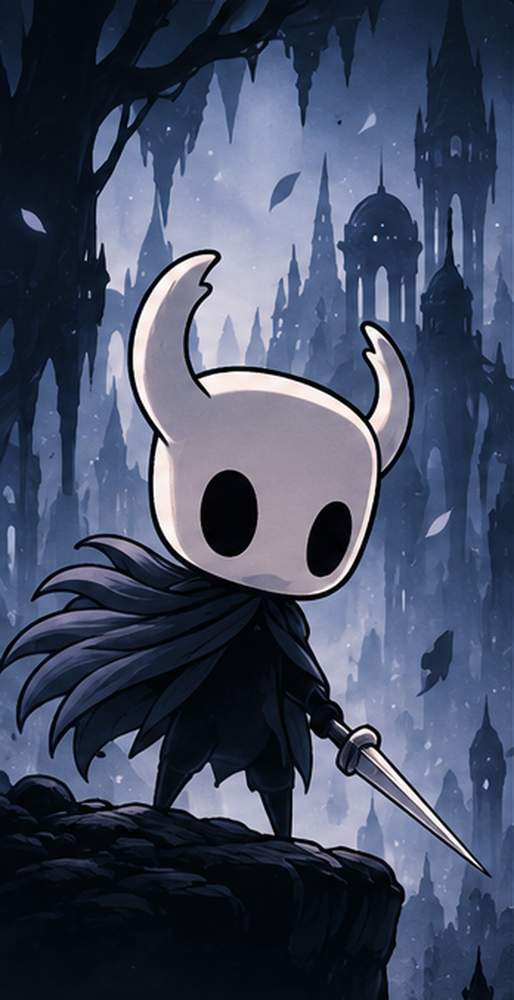
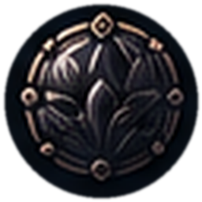
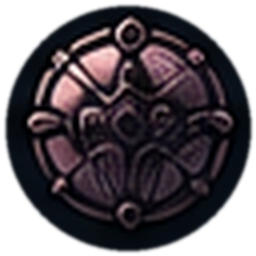
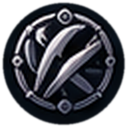
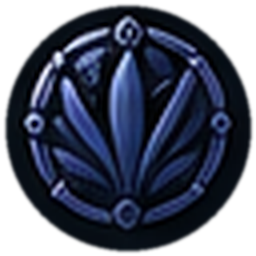
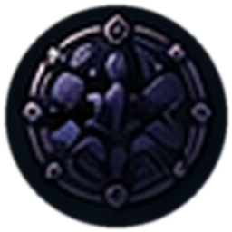

Cavaleiro do Vazio · Nível 30
The Knight
“Um receptáculo vazio, mas que carrega um grande peso.”
Nascido no Abismo, The Knight é um receptáculo silencioso e determinado. Sua máscara branca esconde um corpo moldado pelo Vazio, capaz de enfrentar a infecção que consome o reino de Hallownest. Com seu ferrão em punho, ele desce às profundezas em busca de respostas.
- Natureza: Receptáculo do Vazio
- Origem: Abismo
- Tendência: Neutro
- Graduação: Mestre de Ferrão
- Vida: 9 máscaras
- Alma: 99/99
Atributos & Habilidades
Perícias
Conhecimentos
Inventário & Conquistas
-
Lendário · Item de destaque
Ferrão
A lâmina antiga do Cavaleiro, afiada por incontáveis batalhas. Com ela, ele desfere os cortes do Ferrão, para cima, para baixo e carregados.
-

RaroMarca do Orgulho
Amplia o alcance do ferrão.
-

RaroForça Inquebrável
Aumenta o dano dos golpes.
-

ComumFoco Rápido
Acelera a cura por Foco.
-

ComumCorte Rápido
Golpes mais rápidos e fluidos.
-

RaroMestre das Sombras
Reforça as habilidades ligadas às sombras.
Conquistas e vantagens
- Mestre do Ferrão
- Retorno após a morte
- Exploração de áreas secretas
- Ausência de medo
- Poderes de sonho
- Afinidade com o Vazio
Contato com a Guilda
Quer reunir um grupo, trocar ideias ou ver o código desta ficha? Envie um corvo (ou um clique) para a guilda.
Visitar a guilda no GitHub